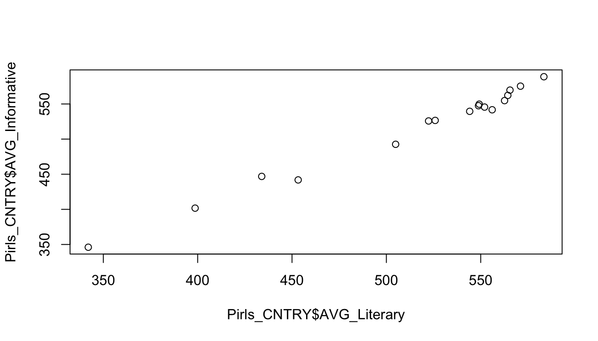
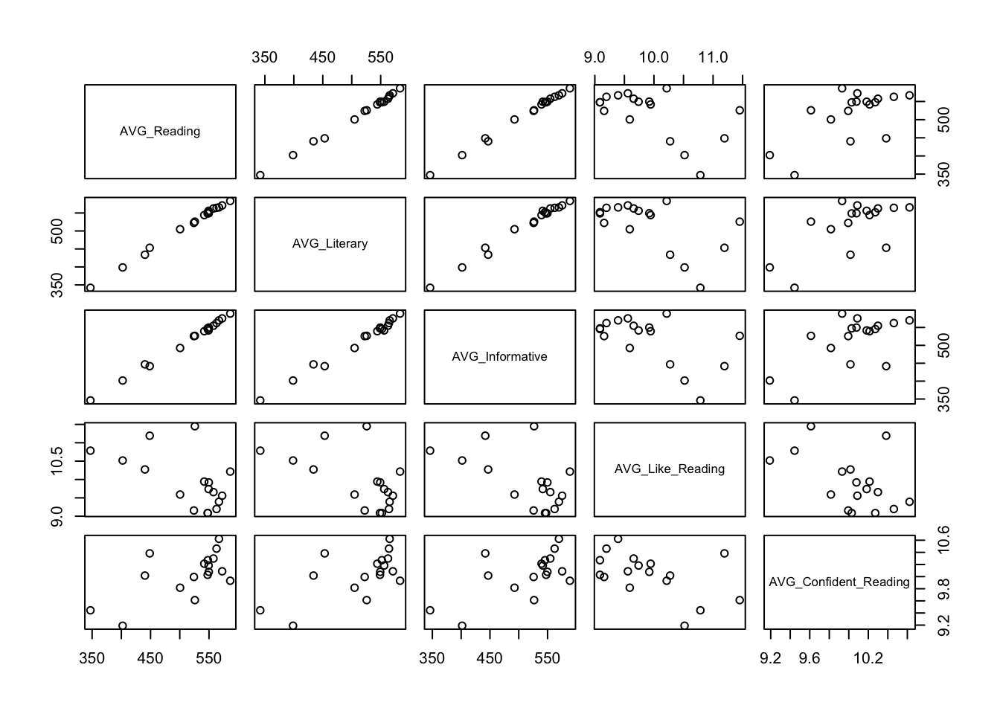

load("Pirls_CNTRY.RData")
source("OLP2 Functies.R")
library(car)ZSO 5
OPDRACHTEN
Vraag 1
Voor deze opdracht duiken we in gegevens uit internationaal vergelijkend onderzoek. Meerbepaald gaan we de data uit het PIRLS 2016 onderzoek analyseren. In dit onderzoek werd in verschillende landen van 10-jarige leerlingen leestoetsen afgenomen. Daarnaast werd van hen ook een survey afgenomen waarbij onder andere gepeild werd naar de mate waarin ze graag lezen en de mate waarin ze zich voldoende zelfzeker voelen in lezen.
De dataset die we gaan hanteren bevat gegevens op systeemniveau. Dat impliceert dat we van 17 onderwijssystemen gegevens hebben over hoe de leerlingen in die systemen gemiddeld scoren op een aantal variabelen. De dataset heet Pirls_CNTRY. De volgende variabelen zitten in de dataset (naast een identificatiecode van het onderwijssysteem):
- AVG_Reading = een algemeen gemiddelde leesvaardigheid;
- AVG_Literary = een gemiddelde leesvaardigheid voor literaire teksten;
- AVG_Informative = een gemiddelde leesvaardigheid voor informatieve teksten;
- AVG_Like_Reading = een gemiddelde score voor mate waarin leerlingen ‘graag lezen’ (een schaalscore);
- AVG_Confident_Reading = een gemiddelde score voor mate waarin leerlingen ‘zelfzeker zijn voor lezen’ (een schaalscore).
1.1 Ga na of het zo is dat onderwijssystemen die goed scoren voor literaire leesvaardigheid ook goed scoren voor informatieve leesvaardighei. Voer de gepaste analyses uit om deze vraag te beantwoorden. Geef de relevante output van je analyses en bespreek deze.
1.2 Maak ook een gepaste visualisatie van het verband tussen beide variabelen.
[RESPONS ACHTERAAN DOCUMENT]
Vraag 2
Toetsgegevens leggen zeer sterk de nadruk op het belang van cognitieve prestaties van leerlingen. In het publieke debat heb je echter ook voorstanders van affectieve outputmaten. Zij staan achter stellingen als: “Onderwijs zou jongeren moeten stimuleren om later graag te lezen…” of “Goed onderwijs is onderwijs dat voornamelijk zorgt dat leerlingen voldoende zelfzeker zijn om te lezen”.
De vraag is, hoe incompatibel zijn beide benaderingen met elkaar? We hebben nu gegevens om na te gaan of onderwijssystemen die erin slagen hoge scores voor cognitieve prestaties te bereiken met hun leerlingen ook de onderwijssystemen zijn die er al dan niet in slagen om hoge scores voor affectieve outputmaten te bereiken.
2.1 Ga in één beweging na hoe de alle cognitieve en affectieve maten in de dataset samenhangen. Wat leer je daaruit?
2.2 Maak ook een gepaste visualisatie van de samenhang tussen al deze maten in de dataset.
[RESPONS ACHTERAAN DOCUMENT]
RESPONSEN
Vooraleer we de analyses kunnen uitvoeren moeten we uiteraard de data inladen in R en tevens de OLP2 Functies activeren. Dit doen we bijvoorbeeld door gebruk te maken van de commando’s load( ) en source( ).
Vraag 1
1.1
Om het verband na te gaan berekenen we de Pearson Correlatiecoëfficiënt tussen de variabelen AVG_Literary en AVG_Informative.
cor.test(Pirls_CNTRY$AVG_Literary, Pirls_CNTRY$AVG_Informative)
Pearson's product-moment correlation
data: Pirls_CNTRY$AVG_Literary and Pirls_CNTRY$AVG_Informative
t = 36.361, df = 15, p-value = 4.822e-16
alternative hypothesis: true correlation is not equal to 0
95 percent confidence interval:
0.9840468 0.9980234
sample estimates:
cor
0.9943751 Uit de analyse blijkt dat de correlatie tussen beide variabelen sterk positief is (r = 0.99). Deze correlatie is bovendien statistisch significant (p < 0.001). We kunnen concluderen dat onderwijssystemen die hoog scoren aangaande literaire leesvaardigheid van leerlingen ook hoog scoren aangaande informatieve leesvaardigheid.
1.2
Om een grafiek te maken, gebruiken we plot( ). Het maakt hier niet uit welke van beide variabelen we op de x-as of y-as zetten aangezien hier geen sprake is van causaliteit.
plot(Pirls_CNTRY$AVG_Literary, Pirls_CNTRY$AVG_Informative)
Vraag 2
2.1
Hiertoe willen we voor meer dan 2 variabelen tegelijkertijd een correlatie berekenen. Om dat mogelijk te maken, maken we eerst een dataframe aan waarin enkel de nodige variabelen staan. We kunnen dit doen door gebruik te maken van het commando data.frame zoals hieronder:
Data_Cor <- data.frame(Pirls_CNTRY$AVG_Reading,
Pirls_CNTRY$AVG_Literary,
Pirls_CNTRY$AVG_Informative,
Pirls_CNTRY$AVG_Like_Reading,
Pirls_CNTRY$AVG_Confident_Reading)Een sneller alternatief is gebruik maken van vierkante haakjes en verwijzen naar de kolomnummers waarin deze variabelen staan. Dit passen we hieronder toe waar we verwijzen naar kolommen 3 tem 7 uit het databestand:
Data_Cor <- Pirls_CNTRY[ , 3:7]Dit nieuwe dataframe gebruiken we als input voor de functie cor.prob()
cor.prob(Data_Cor) AVG_Reading AVG_Literary AVG_Informative AVG_Like_Reading
AVG_Reading 1.0000000 0.0000000 0.000000e+00 0.01681505
AVG_Literary 0.9987420 1.0000000 4.440892e-16 0.01707106
AVG_Informative 0.9983485 0.9943751 1.000000e+00 0.01701226
AVG_Like_Reading -0.5703593 -0.5692785 -5.695256e-01 1.00000000
AVG_Confident_Reading 0.6331125 0.6437388 6.254626e-01 -0.49043277
AVG_Confident_Reading
AVG_Reading 0.006370677
AVG_Literary 0.005295481
AVG_Informative 0.007248237
AVG_Like_Reading 0.045639558
AVG_Confident_Reading 1.000000000Uit tabel staat boven de diagonaal telkens de p-waarde van de correlatie van een combinatie van 2 variabelen. Al deze p-waarden zijn lager dan 0.05 wat ons doet concluderen dat deze variabelen statistisch significant samenhangen. (We kunnen verwachten dat er in de populatie van alle onderwijssystemen een samenhang zal zijn tussen al deze cognitieve en affectieve outputmaten.)
Onder de diagonaal staan de correlatiecoëfficiënten zelf. Wat meteen opvalt is dat alle correlaties tussen AVG_Like_Reading en de overige variabelen negatief zijn. Met andere woorden, de onderwijssystemen die erin slagen om hoge leesvaardigheid bij hun leerlingen te realiseren, zijn ook de onderwijssystemen waar de leerlingen aangeven dat ze minder graag lezen. Ook de samenhang tussen mate waarin leerlingen zelfzeker zijn aangaande lezen en de mate van graag lezen is negatief gecorreleerd op systeemniveau. Het lijkt er dus op dat inzetten op hoge cognitieve prestatiest als onderwijssysteem gepaard gaat met een lagere mate van leesmotivatie bij leerlingen.
2.2
Om deze tendensen in één overkoepelende figuur weer te geven maken we opnieuw gebruik van de plot( ) functie. Binnen de functie verwijzen we naar het object dat de betreffende variabelen alleen bevat (bij ons Data_Cor).
plot(Data_Cor)